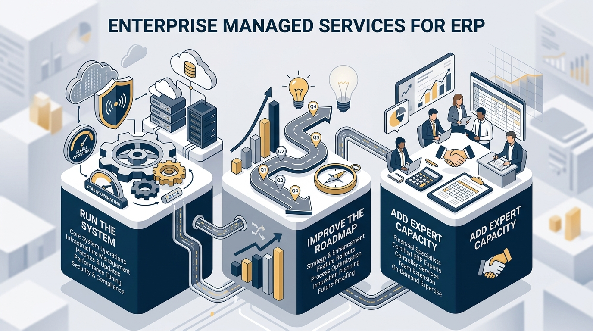

NetSuite Managed Services for Construction and Field Service Teams
Go-live is not the finish line. For construction and field service companies running NetSuite, the real test begins after implementation: when users start working in the system every day, reports need to match how the business actually runs, workflows begin to drift, and the team needs someone who understands both the technology and the operational context behind it.
That is where BlueCollar Managed Services comes in. It is not a call center, and it is not generic break-fix support. BlueCollar Managed Services is an ongoing subscription-based support and advisory relationship designed to help companies keep NetSuite, BlueCollar Projects, BlueCollar extensions, and NetSuite Field Service Management running, improving, tested, documented, and aligned with the way the business actually works.
If your system is live but feels unsupported, start with BlueCollar Managed Services and a Health Assessment to understand what is working, what is drifting, and what should happen next.
Why NetSuite Support Breaks Down After Go-Live
Most companies do not wake up one day with a neat managed services request. They feel the problem before they can fully define it.
The issue is not always the software. Sometimes the real problem is ownership. Sometimes it is process. Sometimes it is training, documentation, reporting logic, release readiness, or a customization that made sense years ago but now creates friction every time the business changes.
Managed Services Should Not Feel Like Break-Fix Support
Traditional support models often wait for something to break. A ticket is created, someone investigates the issue, and the conversation stays focused on the immediate problem. That may solve a symptom, but it does not always help the company understand why the issue happened or how to prevent the next one.
BlueCollar Managed Services is built around a different idea: long-term system ownership, proactive guidance, and vertical expertise.
For construction and field service companies, that matters. A small system issue can affect billing, WIP, retainage, job cost visibility, service operations, reporting, month-end close, or field-to-finance handoffs. A generic support team may see a technical question. BlueCollar sees the operational and accounting context around the question.
Core MessageBlueCollar Managed Services is not reactive help desk support. It is a trusted advisory relationship for companies that need NetSuite and BlueCollar to keep supporting the business after go-live.
What BlueCollar Managed Services Can Help With
BlueCollar Managed Services can support the system, people, workflows, reporting, and roadmap behind a NetSuite environment. The exact plan depends on the customer’s needs, but support may include:
System administration and configuration
Day-to-day support for roles, permissions, workflows, saved searches, scripts, integrations, and system settings.
Quarterly roadmap planning
Guidance on what to fix, improve, simplify, document, turn on, or stop paying for.
Upgrade protection
Sandbox testing, impact review, regression checklists, and release readiness before updates reach production.
Reporting review
Saved searches, dashboards, and reports reviewed in the context of how finance, operations, and field teams actually use the system.
Process cleanup
Identifying spreadsheet workarounds, broken handoffs, and workflows that should be moved back into NetSuite.
Construction accounting support
Help with WIP, retainage, AIA-style pay applications, billing, AR, payroll support, and month-end close context.
Training and documentation
Helping the internal team understand what was built, how to use it, and how to take ownership over time.
Run the System. Improve the Roadmap. Add Expert Capacity.
The BlueCollar Managed Services model can be understood in three simple ways.
Run the System
BlueCollar helps administer and support the NetSuite and BlueCollar environment with people who understand the customer’s configuration, workflows, reporting logic, permissions, integrations, and business rules. The goal is to keep the system stable, usable, and aligned with how the company operates.
Improve the Roadmap
Managed Services should not only answer questions. It should help surface what the team has not had time to review: which reports are drifting, which workflows are creating manual effort, which modules are underused, and which spreadsheet workarounds should move back into the system.
Add Expert Capacity
Sometimes the gap is larger than a support ticket. BlueCollar can help provide construction-fluent system and accounting capacity, such as controller support, project accounting support, billing and AR support, payroll support, or NetSuite system administrator support, depending on availability and fit.

Start With a Health Assessment. Leave With a Roadmap.
An ongoing support agreement can feel like a big step when the problem is not fully defined. That is why a Health Assessment is a strong starting point.
A BlueCollar Health Assessment reviews where the system is working, where it is drifting, where teams are working around it, and what should be prioritized next. The output is a roadmap the customer can use whether or not they continue with BlueCollar.
That roadmap may point to support, optimization, reporting cleanup, process changes, training, module adoption, release readiness, or construction-fluent capacity. It may also show that the company does not need to buy anything new. Sometimes the answer is process, training, documentation, or removing unnecessary complexity.
Start with clarity. Leave with a plan.
Whether your admin left, spreadsheets crept back in, or you just finished implementation, a Health Assessment gives you an actionable blueprint for your NetSuite environment.
Built for Construction and Field Service Teams
Construction and field service companies do not run on generic accounting logic. They manage job cost details, WIP, retainage, AIA-style billing, certified payroll, change orders, service operations, multiple entities and divisions, and reporting that has to match what happens outside the office.
That context changes the support conversation. A reporting issue may not really be a dashboard issue. It may be a workflow issue upstream. A billing problem may be tied to project setup, approvals, retainage, or how field activity flows into the back office.
BlueCollar Managed Services is designed for that reality. It helps finance, operations, IT, project teams, and field service leaders work from a system that is not only technically supported, but better aligned with how the business actually runs.
Review NetSuite Field Service Management for service operations support, and NetSuite construction software for construction ERP context.
Who BlueCollar Managed Services Is For
BlueCollar Managed Services is especially useful for companies in one of these situations:
Live and unowned
The system is running, but no one fully owns reporting, roadmap, cleanup, training, or day-to-day improvements.
Just past go-live
Implementation is ending, but the team still needs continuity, release readiness, workflow adjustments, and support.
Short on people
The business needs construction-fluent system or accounting capacity without starting from zero.
Reporting is drifting
Finance, operations, and field teams no longer trust the same view of the business.
Spreadsheets are creeping back in
Teams are doing work outside the system that should be supported inside NetSuite.
Hypercare Ends. BlueCollar Does Not.
Implementation should not end with the customer wondering who to call next. Once the system is live, the business still needs questions answered, reports reviewed, workflows adjusted, users trained, releases tested, and the roadmap updated as operations change.
BlueCollar Managed Services gives implementation clients a cleaner handoff from project delivery to ongoing support. The goal is not to start over with a new team. The goal is continuity: the people supporting the system understand what was built, why it was built, and how it should keep evolving.
The Bottom Line on NetSuite Managed Services
NetSuite should not drift just because implementation is over, the admin left, or the team is too busy to step back and review what has changed.
BlueCollar Managed Services helps construction and field service companies keep NetSuite and BlueCollar systems running, improving, tested, documented, and aligned with the way the business works. It brings together system support, roadmap guidance, upgrade protection, reporting review, process cleanup, training, and construction-fluent expertise in one ongoing relationship.
Start with clarity. Leave with a plan. Get a Health Assessment with BlueCollar Managed Services.